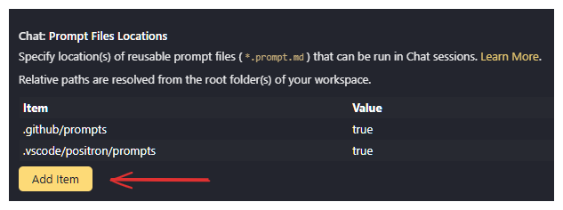
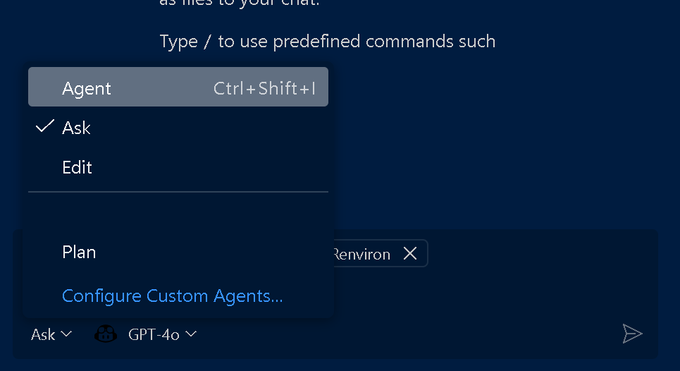

flowchart LR A["/gpid-proto-start-task\n(plan + initialize)"] --> B["Implementation\nloop"] B --> C["/gpid-proto-log-update\n(after each milestone)"] C --> B B --> D["/gpid-proto-wrap-task\n(end of task)"]
6 Mandatory Protocols for Using GitHub Copilot in Technical Work
Abstract
This document outlines mandatory protocols for using GitHub Copilot in technical work, explains how to use the GPID prompt files that implement these protocols, and provides guidance on installation, usage, and maintenance.
6.1 Purpose and Principles
GitHub Copilot is a powerful assistant that can increase productivity, generate boilerplate code quickly, and support experimentation. However, Copilot is not a substitute for engineering judgment, critical thinking, or expertise in R/Stata. Without discipline, Copilot can also introduce inefficiency, unnecessary complexity, hallucinated dependencies, and silent errors. This document establishes:
- Mandatory protocols for how Copilot must be used in all GPID technical work.
- A unified system of Copilot prompt files, named
gpid-proto-*, which encode these protocols into reproducible steps.
- Clear instructions on how to install, update, and use these prompt files across all GPID projects.
Team leads will verify compliance during code reviews.
6.2 GPID Copilot Prompt System
To ensure consistency, the GPID team uses shared Github Copilot prompt files stored in a central repository. These prompt files automate the workflows described in this document.
6.2.1 What Are GPID Prompt Files?
Prompt files are .prompt.md files that define reusable Github Copilot commands.
They appear in VS Code or Positron when you type / in Github Copilot Chat.
Each GPID protocol prompt begins with the prefix gpid-proto-
Examples:
/gpid-proto-start-task← always first (plan + initialize)/gpid-proto-log-update/gpid-proto-explain-code/gpid-proto-document-code/gpid-proto-review-code/gpid-proto-tests-checklist/gpid-proto-deps-risk/gpid-proto-wrap-task
These commands help you follow the mandatory protocols with minimal effort.
6.2.2 Where the Prompt Files Live
The shared prompts are stored in the repository GPID-WB/copilot-prompts. The prompt files for these protocols are in the folder protocols/
protocols/
gpid-proto-start-task.prompt.md
gpid-proto-log-update.prompt.md
gpid-proto-explain-code.prompt.md
gpid-proto-document-code.prompt.md
gpid-proto-review-code.prompt.md
gpid-proto-tests-checklist.prompt.md
gpid-proto-deps-risk.prompt.md
gpid-proto-wrap-task.prompt.md
.github/agents/
gpid-planner.agent.md
These prompts are global tools used in every GPID technical project.
6.2.3 One-Time Installation (Per Developer)
Each team member must clone the prompts repository locally. For the rest of this document, we assume you clone it to:
C:\Users\<USERNAME>\OneDrive - WBG\GPID-team\copilot-prompts
6.2.4 Registering Prompt Files and the GPID Planner Agent in VS Code / Positron
After cloning, you must register the prompt files location and the GPID Planner agent in your settings. The steps below apply to both VS Code and Positron, except for the agent registration, where Positron currently requires a workaround.
6.2.4.1 1. Register the prompt files
- In VS Code/Positron, open settings via the gear icon in the lower left corner or by hitting
Ctrl + ,. - Search for
chat.promptFilesLocations(without quotes). - Hit “add item” and add the full path to the
protocols/subfolder.
- Typing
/in Github Copilot Chat will now show all GPID protocol prompts.
6.2.4.2 2. Register the GPID Planner agent
6.2.4.2.1 In VS Code
- In settings, search for
chat.agentFilesLocations. - Hit “add item” and add the full path to the
.github/agents/subfolder of your local clone. - Restart VS Code.
The GPID Planner agent will now appear in the agents dropdown in Github Copilot Chat.
6.2.4.2.2 In Positron (temporary workaround)
Warning
Positron does not yet support chat.agentFilesLocations. The steps below are a temporary workaround until the Positron team adds support for this setting.
You have two options:
Option A — Global (available in all workspaces)
In the menu on Positron Assistant Chat, click on “Ask” and then on “Configure Custom Agent” to create a global agent:

- Create a new custom agent and select
User Data. - Set the name to
gpid-planner. - Open the file
gpid-planner.agent.mdfrom your local clone ofcopilot-promptsin another session:copilot-prompts\.github\agents\gpid-planner.agent.md - Copy the entire file content and paste it into the new agent editor in Positron you just created, then save.
- Restart Positron.
The agent will be available globally across all workspaces. After each git pull in the copilot-prompts repository, repeat steps 3–4 to update the agent if the file changed.
Option B — Per workspace (current project only)
Copy gpid-planner.agent.md to .vscode/positron/agents/ inside your project (create the folder if it does not exist).
Whenever a prompt file changes, you will be notified. However, the best practice is to regularly update your local copy. You can do it by opening the copilot-prompts folder in a terminal and running git pull, opening the whole folder in Positron and VScode and sync the changes or by using script similar to this:
cd "C:\Users\USERNAME\OneDrive - WBG\GPID-team\copilot-prompts"
git pull6.3 How the GPID Copilot Workflow Works
6.3.1 The big picture
Every GPID task follows this workflow:
6.3.2 What is “plan mode”?
Important
Plan mode in the GPID system means selecting the GPID Planner custom agent from the agents dropdown in Github Copilot Chat — it is not a slash command.
The GPID Planner agent is read-only (no file edits allowed) and its only job is to produce a deterministic, approved plan before any code is written. Once planning is complete, use the “Start Implementation” handoff button to switch to the standard implementation agent.
Step-by-step:
- Run
/gpid-proto-start-task— this automatically switches to the GPID Planner agent (as defined in the prompt’sagent:field), gathers task info, produces the plan, handles the TTL approval reminder if needed, and saves the log. Optionally, you can manually select GPID Planner from the agent picker dropdown before running the prompt; the result is the same. - Click Start Implementation when the plan is approved — this switches you to
Agentmode with the approved plan already in context. - Work through the implementation using the prompts described below.
- Run
/gpid-proto-log-updateafter each meaningful milestone. - Run
/gpid-proto-wrap-taskto close the task and produce the final validation bundle.
6.3.3 Model assignment
Some prompts are assigned a lightweight model to save cost on documentation-only tasks. Tasks requiring complex reasoning use the model you have selected in the chat picker.
| Prompt | Model | Reason |
|---|---|---|
/gpid-proto-start-task |
User’s selected model | Requires reasoning to produce a deterministic plan |
/gpid-proto-explain-code |
Claude Haiku 4.5 → Claude Sonnet 4.5 | Linear summarisation; lightweight |
/gpid-proto-document-code |
Claude Haiku 4.5 → Claude Sonnet 4.5 | Mechanical comment/Roxygen2 generation |
/gpid-proto-log-update |
Claude Haiku 4.5 → Claude Sonnet 4.5 | Structured append; no reasoning required |
/gpid-proto-review-code |
User’s selected model | Adversarial reasoning about code quality |
/gpid-proto-tests-checklist |
User’s selected model | Requires reasoning about correctness and edge cases |
/gpid-proto-deps-risk |
User’s selected model | Security and compatibility reasoning |
/gpid-proto-wrap-task |
User’s selected model | Synthesises entire session; most demanding |
To update the lightweight model: search for
Claude Haiku 4.5in theprotocols/folder and replace both the primary and fallback entries in the three affected prompt files.
6.4 The GPID Protocol Prompts
The following sections describe each mandatory protocol and the corresponding gpid-proto-* prompt.
Protocol 1 — Planning and Initializing the Task
Prompt:
/gpid-proto-start-task
Important
This is Protocol 1 — mandatory for every task. Run this inside the GPID Planner agent (see workflow above). No implementation should begin without a saved plan.
Purpose
Before any implementation begins, the team must produce a detailed, deterministic plan. This ensures that:
- The scope and approach are agreed upon before code is written.
- Tasks assigned by a TTL are reviewed for approval before proceeding.
- Any deviation from the plan during implementation is explicitly flagged and documented with a rationale.
What It Does
When you run /gpid-proto-start-task, VS Code displays input dialogs to collect the task name and TTL-assignment status upfront, then activates the GPID Planner agent with that context already in place. The agent then:
- Opens an interactive conversation to gather a full task description — asking clarifying questions until the scope is unambiguous.
- Produces a numbered checklist plan (
- [ ] Step N: ...) covering scoping, design, implementation, validation, documentation, and wrap-up. - If TTL-assigned, displays an approval reminder and waits for
approvedbefore continuing. - Saves the plan to
copilot_logs/LOG_${TASK_NAME}.mdunder## PLAN, with an empty## Plan Deviationsblock. - Creates
.current_task, begins a running session summary, and asks “Are you ready to proceed with implementation?” before surfacing the Start Implementation handoff button.
Plan Deviations
If the plan changes during implementation, the deviation must be logged with the strict marker:
### ⚠️ PLAN DEVIATION — YYYY-MM-DD HH:MM:SSEvery deviation is also appended to the ## Plan Deviations block at the top of the log. This block is greppable: git grep "PLAN DEVIATION" copilot_logs/ surfaces all deviations across all tasks.
Latest GPID prompt file
Notegpid-proto-start-task
---
name: gpid-proto-start-task
description: "Plan and initialize a new Copilot-assisted task"
agent: gpid-planner
---
A new task is starting. The following information has been provided upfront:
- **Task name:** ${input:TASK_NAME:Short task name (no spaces, use underscores)}
- **TTL-assigned:** ${input:TTL_ASSIGNED:Was this task assigned by a TTL? (yes/no)}
Begin the planning protocol now.Protocol 2 — Logging progress of the task
Prompt:
/gpid-proto-log-updatePurpose
Keep the copilot_logs/LOG_${TASK_NAME}.md updated with regular progress updates.
What It Does
When you run /gpid-proto-log-update, Github Copilot will append an update to the running summary in copilot_logs/LOG_${TASK_NAME}.md with:
- Timestamp: Include the current date and time in ISO format (YYYY-MM-DD HH:MM:SS)
- Progress summary: Key accomplishments since the last update
- Challenges encountered: Any blockers, issues, or difficulties faced
- Changes to plan: Deviations from the original approach or scope
- Next steps: What will be tackled next
Latest GPID prompt file
Notegpid-proto-log-update
---
name: gpid-proto-log-update
description: "Update the task progress log with new information"
model: ['Claude Haiku 4.5', 'Claude Sonnet 4.5'] # lightweight model; update both entries if model is retired
argument-hint: "TASK_NAME for copilot_logs/LOG_TASK_NAME.md"
---
We are updating the **task progress log** for an ongoing Copilot-assisted task.
## Retrieving the task name
Locate the task name you provided at the start of this conversation session. Confirm it by restating:
> Task name: [TASK_NAME]
Then proceed to update `copilot_logs/LOG_${TASK_NAME}.md` where `${TASK_NAME}` is that task name.
**Fallback:** If you cannot locate the task name in the conversation history, read `.current_task` to retrieve it. If that file doesn't exist either, ask the user to provide the task name with a single prompt: `Please provide the TASK_NAME to update copilot_logs/LOG_TASK_NAME.md.`
After confirming the task name, proceed with the update:
## Update the log file `copilot_logs/LOG_${TASK_NAME}.md`:
1. **Open and review** the existing log file to understand its current state and structure.
2. **Append a new update section** with:
- **Timestamp**: Include the current date and time in ISO format (YYYY-MM-DD HH:MM:SS)
- **Progress summary**: Key accomplishments since the last update
- **Challenges encountered**: Any blockers, issues, or difficulties faced
- **Changes to plan**: Deviations from the original approach or scope
- **Next steps**: What will be tackled next
3. **Update or create the To Do List section**:
- Review the conversation since the last log update (or since task initialization)
- Identify potential follow-up tasks, improvements, technical debt, or issues discovered
- **Before adding to the log**, present your suggested to-do items to the user in a clear list format
- Ask: "I suggest adding these items to the To Do List. Would you like me to include them, or would you like to modify/add others?"
- Only after user confirmation, add/update the "## To Do List" section in the log
- If a To Do List section already exists, preserve completed items and update with new suggestions
4. **Maintain organization** by:
- Using clear section headings for each update
- Keeping entries concise but informative
- Ensuring the log remains chronologically ordered
- Using consistent formatting throughout
5. **Preserve all prior content**: Do not remove or modify previous log update entries; only append new information. The `## Plan Deviations` block is the only section near the top of the log that should be modified (to accumulate deviation summaries).
Return the updated `copilot_logs/LOG_${TASK_NAME}.md` file with the new update appended.Protocol 3 — Making the Code Understandable
Prompts:
/gpid-proto-explain-code
/gpid-proto-document-codePurpose
Github Copilot may generate correct code, but not always readable code. These prompts ensure that the logic, intention, and structure are thoroughly documented.
What They Do
/gpid-proto-explain-code
- Asks what function/file you want explained
- Produces a step-by-step technical explanation
- Lists assumptions
- Identifies failure points
Latest GPID prompt file
Notegpid-proto-explain-code
---
name: gpid-proto-explain-code
description: "Explain code step-by-step and surface assumptions"
model: ['Claude Haiku 4.5', 'Claude Sonnet 4.5'] # lightweight model; update both entries if model is retired
---
You will be asked to explain a function, test file, or script (usually R or Stata).
If the context is ambiguous, first ask me **what code or file you should focus on** (e.g., current selection, specific function, or file).
Then follow this protocol:
1. **High-level overview**
- In 3–5 sentences, explain what the code does conceptually.
2. **Step-by-step explanation**
- Walk through the major blocks of the code.
- Focus on logic and structure rather than line-by-line commentary.
3. **Assumptions**
- Explicitly list assumptions about:
- input types, shapes, and ranges
- required columns / variables
- expected data structure (e.g., data.table, Stata dataset)
- external dependencies or files
4. **Failure points**
- Identify where the code might break or behave incorrectly:
- missing or malformed inputs
- edge cases (empty data, small N, extreme values)
- performance pitfalls on large data
Return your explanation in **clean Markdown** with headings:
- High-level overview
- Step-by-step explanation
- Assumptions
- Potential failure points
This text should be ready to paste into the task summary./gpid-proto-document-code
- Adds in-code comments (the “what” and the “why”)
- Adds full Roxygen2 documentation (for R code)
- Produces a plain-language explanation for the task summary
Latest GPID prompt file
Notegpid-proto-document-code
---
name: gpid-proto-document-code
description: "Add comments and Roxygen2 documentation for R/Stata code"
model: ['Claude Haiku 4.5', 'Claude Sonnet 4.5'] # lightweight model; update both entries if model is retired
---
You will be given one or more functions or scripts, mainly in **R** (often using `data.table`, `collapse`, `rlang`) and sometimes **Stata**.
If it is unclear what code to document, first ask me **which function/file/selection** to use.
Then follow this protocol:
1. **In-code comments**
- Add clear, human-readable comments that explain:
- what each major block does
- why this approach or pattern is appropriate
- important trade-offs or design decisions
- Avoid trivial “this line adds 1” comments. Focus on intent.
2. **Roxygen2 (for R functions)**
- For each relevant R function, add or update:
- `@title`
- `@description`
- `@param`
- `@return`
- `@examples` (when helpful and not trivial)
- `@import` / `@importFrom` only when truly needed.
- Prefer our usual stack (`data.table`, `collapse`, `rlang`) when appropriate.
3. **Plain-language explanation**
- At the end, write a short, plain-language explanation of how the main function(s) work, suitable for a teammate reading them for the first time.
Return:
1. The updated code (with comments and Roxygen2 tags).
2. The plain-language explanation as a separate Markdown section that can be added to the task summary.Protocol 4 — Code Review
Prompt:
/gpid-proto-review-codePurpose
Before testing, every piece of Copilot-generated code must undergo a combined efficiency, complexity, and robustness review.
What It Does
The prompt reviews code for:
- inefficiencies and unnecessary copies
- complexity and dead code
- risky assumptions and poor NA handling
- dependency bloat and stack alignment (
data.table,collapse,rlang)
It ends with a Key strengths / Key risks / Top 3 improvements summary.
Latest GPID prompt file
Notegpid-proto-review-code
---
name: gpid-proto-review-code
description: "Review code for inefficiencies, complexity, risky assumptions, and stack fit"
---
You are performing a **combined code review and self-critique** of Copilot-assisted code, as if you were both an external reviewer and the original author.
If it is unclear what code to review, first ask: **which function, file, or selection should be reviewed?**
---
## 1. Inefficiencies
- Redundant or duplicated logic
- Unnecessary copies of large objects
- Loops that could be vectorised or replaced by `data.table` / `collapse` operations
- Operations that will be slow or memory-heavy on large data
## 2. Complexity and dead code
- Over-nested `if`/`else` or loops that could be simplified
- Confusing control flow or unneeded abstractions
- Unused variables, unreachable logic, or old commented-out blocks
## 3. Risky assumptions
- Fragile expectations about input types, shapes, or ranges
- Poor handling of `NA` / missing values
- Edge cases likely to break the code silently
## 4. Dependency issues
- New or heavy dependencies that may not be justified
- Packages that overlap with or conflict with `data.table`, `collapse`, or `rlang`
- Suggestions for removals or replacements aligned with our preferred stack
## 5. Opportunities to use our preferred stack
- Places where `data.table`, `collapse`, or `rlang` would produce clearer or more efficient code
- Only flag these when the improvement is material, not cosmetic
---
## Output format
For each issue found:
- Describe the problem
- Propose a specific improvement
- Explain its impact (performance, readability, robustness, maintainability)
End with a short summary:
**Key strengths:**
**Key risks:**
**Top 3 improvements to implement next:**Protocol 5 — Testing and Edge Cases
Prompt:
/gpid-proto-tests-checklistPurpose
No Copilot-generated code is accepted without thorough testing.
What It does
- A validation checklist
testthatunit tests (for R)- Stata assertions (if needed)
- Optional performance tests
All structured for direct inclusion in your PR.
Latest GPID prompt file
Notegpid-proto-tests-checklist
---
name: gpid-proto-tests-checklist
description: "Generate validation checklist and tests for a function or module"
---
You will help design validation for a function, module, or script.
If it is unclear what to validate, first ask me **which function/file/selection** to focus on.
Then follow this protocol:
1. **Validation checklist**
- List:
- expected inputs and outputs
- required dependencies
- main assumptions
- potential failure points
- edge cases that must be tested
2. **R unit tests (`testthat`)**
- When the code is in R, generate `testthat` tests that cover:
- normal cases
- edge cases
- wrong input types
- missing values
- extreme or unusual data scenarios
3. **Stata tests**
- When the code is in Stata, generate a do-file with assertions/checks for:
- realistic data
- corner cases
- unexpected or malformed inputs
4. **Performance-sensitive checks (optional)**
- If the code is performance-critical or uses large data, propose tests that:
- stress memory usage
- expose slow operations or unnecessary copies
Return:
- the validation checklist (Markdown)
- the test code (R `testthat` or Stata do-file) ready to be added to the repository Protocol 6 — Dependencies, Risks, and Safety
Prompt:
/gpid-proto-deps-riskPurpose
Ensure that dependencies are justified, safe, and aligned with team standards.
What It Does
- Lists all dependencies
- Explains why each is needed
- Flags unnecessary packages
- Checks compatibility with
data.table,collapse, andrlang - Identifies unsafe patterns (I/O, file paths, etc.)
Latest GPID prompt file
Notegpid-proto-deps-risk
---
name: gpid-proto-deps-risk
description: "Analyze dependencies, compatibility, and security/stability risks"
---
You are reviewing dependencies and risks for Copilot-assisted code in R or Stata.
If it is unclear what code to inspect, ask me **which file/selection** to analyze.
Then:
1. **Dependency analysis**
- List all external packages/dependencies used or introduced.
- For each, explain briefly **why it is needed**.
- Identify dependencies that are:
- unnecessary
- overlapping/redundant
- heavier than needed for the task
- Suggest simplifications or removals where possible.
2. **Compatibility with our preferred stack (R)**
- Check for conflicts or unnecessary overlaps with:
- `data.table`
- `collapse`
- `rlang`
- When reasonable, suggest implementations that better fit this stack.
3. **Security and stability**
- Flag any:
- unsafe file I/O patterns
- hard-coded paths, credentials, or URLs
- fragile assumptions about external systems or files
- Provide concrete suggestions to mitigate each risk.
Return findings in Markdown with sections:
- Dependencies and justification
- Opportunities to simplify dependencies
- Compatibility with preferred stack
- Security and stability concerns
- Recommended mitigations Protocol 7 — Producing the Final Validation Bundle
Prompt:
/gpid-proto-wrap-taskPurpose
Every Copilot-assisted task ends with a final Markdown summary stored under:
copilot_logs/TASK_NAME.mdWhat It Does
- Task overview
- Step-by-step technical explanation
- Plain-language overview
- In-code comments summary
- Roxygen2 documentation summary
- Validation checklist
- Unit tests and edge cases
- Error-handling strategy
- Dependency and risk analysis
- Code review findings
- Remaining TODOs
This file must always be included in your PR.
Latest GPID prompt file
Notegpid-proto-wrap-task
---
name: gpid-proto-wrap-task
description: "Create the final task summary and validation bundle"
argument-hint: "TASK_NAME for copilot_logs/TASK_NAME.md"
---
We have reached the end of a Copilot-assisted task.
## Retrieving the task name
Locate the task name you provided at the start of this conversation session. Confirm it by restating:
> Task name: [TASK_NAME]
Then proceed to work with `copilot_logs/TASK_NAME.md` and `copilot_logs/LOG_${TASK_NAME}.md` where `${TASK_NAME}` is that task name.
**Fallback:** If you cannot locate the task name in the conversation history, read `.current_task` to retrieve it. If that file doesn't exist either, ask the user to provide the task name with a single prompt: `Please provide a short TASK_NAME to save the final report as copilot_logs/TASK_NAME.md.`
After confirming the task name, proceed with the task completion:
## Step 1: Review the task log
Before generating the final summary, carefully review the existing task log file at `copilot_logs/LOG_${TASK_NAME}.md`. This file contains:
- The task initialization details
- All progress updates recorded throughout the task
- Challenges encountered and solutions implemented
- Changes made to the original plan
Use this log to ensure that all relevant information, decisions, and important details are captured in the final summary. Verify that no critical information is overlooked.
## Step 2: Generate the final Markdown report
Using our full conversation, your running summary, and the reviewed task log, generate a **Markdown report** suitable for saving as `copilot_logs/TASK_NAME.md`. This final report should synthesize all work completed and provide clear documentation for future reference.
Include:
1. **Executive Summary**
- brief overview of what the task accomplished
- primary goals achieved
- overall status (complete, in-progress, blocked, etc.)
2. **Task Overview**
- what the task was about
- main files/functions affected
- major decisions and trade-offs made
3. **Technical Explanation**
- step-by-step description of how the code works
- important algorithmic or design choices
- any performance considerations
- rationale for technical decisions
4. **Plain-Language Overview**
- why the code exists
- how a teammate should use it
- non-technical explanation of the behavior
5. **Documentation and Comments**
- confirmation of in-code comments and Roxygen2 docs (for R)
- any important notes for future maintainers
- known limitations or caveats
6. **Validation and Testing**
- validation checklist with status for each item
- unit tests and edge cases covered (summarize what is tested)
- error-handling strategy (how invalid or unexpected inputs are handled)
- performance-sensitive tests, if applicable
7. **Dependencies and Risk Analysis**
- summary of dependency decisions
- key security/stability considerations
- any external factors that could affect the work
8. **Self-Critique and Follow-Ups**
- main issues uncovered by reviews/self-critique
- remaining TODOs or recommended future improvements
- potential enhancements or optimizations for next iteration
- **To Do List**: Extract any to-do items from the task log (`copilot_logs/LOG_${TASK_NAME}.md`)
- Before finalizing, present the compiled to-do list to the user
- Ask: "Here are the to-do items identified during this task. Would you like to add, remove, or modify any items before I include them in the final report?"
- Wait for user confirmation or modifications before proceeding
Return **only** the Markdown document, and save it as `copilot_logs/${input}.md`.
This final report, combined with the task log (`copilot_logs/LOG_${input}.md`), provides a complete record of the task work and can serve as reference material for future similar tasks.
## Step 3: Clean up temporary files
After creating `copilot_logs/TASK_NAME.md`, ask the user: **"May I delete the temporary `.current_task` marker file to keep the project clean?"**
If the user agrees (or does not object), delete `.current_task`. If they prefer to keep it or it doesn't exist, proceed without action.
Important
If you’re working in an R package, make sure to include the copilot_logs folder in your .Rbuildignore file to prevent it from being included in the package build.
You can do it by
- executing
usethis::use_build_ignore("copilot_logs")or, - by manually adding the line
^copilot_logs/$to the.Rbuildignorefile.
6.6 Full Workflow Example
The diagram below shows a complete task walkthrough where all prompts are used. This is the recommended sequence when working on a non-trivial feature or bug fix.
flowchart TD
A(["/gpid-proto-start-task\nPlan & initialize\n(GPID Planner agent)"]) --> B["Implement\ncode changes"]
B --> C["/gpid-proto-explain-code\nDocument understanding\nof new/changed code"]
C --> D["/gpid-proto-document-code\nGenerate comments\n& Roxygen2 docs"]
D --> E["/gpid-proto-tests-checklist\nDefine & run\ntest cases"]
E --> F["/gpid-proto-deps-risk\nAssess dependency\n& security risks"]
F --> G["/gpid-proto-review-code\nAdversarial code\nquality review"]
G --> H{More work\nneeded?}
H -- Yes --> B
H -- No --> I["/gpid-proto-log-update\nLog milestone"]
I --> J{Task\ncomplete?}
J -- No --> B
J -- Yes --> K(["/gpid-proto-wrap-task\nFinal validation bundle\n& close task"])
style A fill:#d4edda,stroke:#28a745
style K fill:#d4edda,stroke:#28a745
style H fill:#fff3cd,stroke:#ffc107
style J fill:#fff3cd,stroke:#ffc107
Note:
/gpid-proto-log-updateshould be run after each meaningful milestone, not only at the end. The loop above is simplified; in practice, you may log several updates before the task is complete.